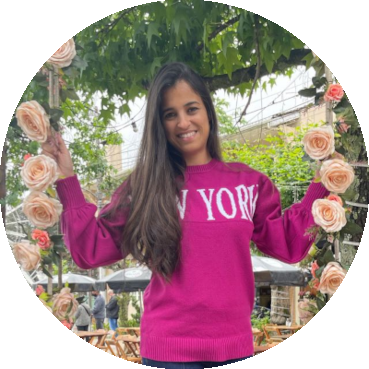

Feliz aniversário Mi!
As vezes a gente acha que já disse tudo, que o relacionamento está garantido, que não pairam mais dúvidas...
Contudo, o tempo sempre traz aprendizado e o mais recente é que, como todo o resto, há que se ter manutenção constante; inclusive, nessa maravilhosa relação que estabelecemos há mais de 10 anos!
Sempre haverá espaço para mais flores, mais carinho, mais palavras de encorajamento, mais compreensão, mais confidencialidade, mais cumplicidade, mais parceria e, por fim, mais união.
No cinema não é o filme, são as mãos dadas da fila da pipoca até a poltrona, é a troca de olhares quando alguma cena emociona, é se preocupar em saber o que o outro achou do que acabou de assistir, é sobre debater os pontos de vista.
Na piscina não é se a água é fria ou morna, é passar protetor nas costas um do outro, é o convite para entrar junto na piscina, é querer carregar nos braços a outra pessoa quando o empuxo a deixa mais leve, é monitorar se o nariz do outro está limpo, é se preocupar em olhar a criança e avisar que está tudo sob controle.
Em casa não é quem faz o quê, é deixar a pasta de dentes na escova para o outro, é buscar a toalha para o outro se secar depois do banho, é brigar para ver quem desce na portaria para buscar o que chegou, é fechar a porta para não atrapalhar a reunião que está rolando, é sobre servir ao outro água, fruta ou snack quando a fome e a sede chegam para gente.
Nos encontros sociais não é saber quem estará lá, é querer saber se o outro vai também, é se preocupar em saber se o outro comeu, é perguntar se o outro quer bebida quando a sede bate e você vai pegar algo pra você, é cantar parabéns do ladinho um do outro, é dançar mesmo quando parece que toda 'dureza' do mundo se concentra no quadril do parceiro, é fofocar a caminho de casa sobre o que viu e atestar que não faria o mesmo em situação semelhante.
Nos desafios não é se você já passou por pior sem reclamar, é empatizar-se e querer dizer a coisa certa que colocaria fim ao sofrimento, é segurar as mãos na esperança que o toque botaria fim à ansiedade e ao pesar, é sentir a dor alheia e não saber como convencer o outro que Deus transformará aquela ocasião em superação, é desejar passar pela experiência que aflige o conjugê no lugar dele.
No aniversário não é o presente, é o esforço em impressionar, é a tentativa de surpreender apesar das gafes e bolas fora, é fazer vista grossa quando tudo está muito evidente e você não quer deixar o outro triste por que descobriu o presente, é sobre não querer ser um fardo só porque você nasceu naquele dia, é sobre genuinamente só querer de presente um pouquinho mais do outro.
Não é se o cartão de aniversário é bonito ou se a qualidade do papel é fotográfica, é sobre ter a consideração de parar para escrever, é querer ter certeza que apesar da evolução pessoal a essência da mensagem ainda cativa a outra parte, é ter medo de escrever alguma coisa que possa ser interpretada de forma errada, é se importar se vai emocionar positivamente.
Tenho certeza que há quem jure que eu não tenha essa consciência toda por conta do que falo e faço ou por causa do que deixo de falar e de fazer. Em última análise, entretanto, só me reservo ao direito de dissociar meus atos e palavras do que sinto. Acredito, no fundo do meu âmago, que roubar um sorriso descontraindo valha tanto quanto um "eu te amo" bem colocado; pois, o tempo tem o poder mágico de transformar qualquer "mau bocado" em piada nostálgica.
Eu não te amo apenas, eu amo a imagem residual inconsciente que tenho de ti... Uma pessoa justa, uma esposa imbatível, uma parceira fiel, uma mulher caprichosa, uma mãe exemplar, de um caráter indubitável, de fé ímpar, que se coloca como porto seguro para todos os navios, de equilíbrio perfeito para motivar na prostração e confortar na inquietação, com uma felicidade que contagia e uma disposição infindável... e o tempo só me ensina mais e mais a teu respeito, quando eu penso que a lista de características positivas acabou eu me dou conta de um detalhezinho pequeno, e quando exploro racionalmente percebo que ele é indício de algo muito maior, algo que agrega ainda mais à minha ideia de "Michelle". Uma ideia tão impactante que eu gostaria que todos a pudessem construir em relação aos seus conjugês, pois garantidamente os cartórios não registrariam mais divórcios.
Não bastasse tudo isso, o que você me proporcionou e proporciona não tem preço. A família que formamos, e poder estar junto dela, é digno de celebração e graça diária. E quando "estivermos bem velhinhos" (usando suas próprias palavras) olharemos para nossa trajetória e nos encheremos de orgulho, e olharemos um para o outro e nos encheremos da admiração máxima. Admiração máxima: por termos desfrutado de tudo o que tínhamos para oferecer um ao outro; e, Orgulho: por termos um dia tomado a decisão de "nos tornarmos maior do que a soma das partes que somos".
Meu Deus, meu pai, me ajude a continuar fazendo o que está dando certo para manter a graça de continuar com essa Tua filha até o último dos meus dias, meu Pai. E abençoa, Senhor, essa união; que quem te pede quer acima de tudo o bem da família que a ele entregaste a cuidado.
Eu desejo que o dia de hoje chegue aos seus pés e seja tão alegre quanto é a minha vida graças à tua existência.
Eu te amo, Adriano.